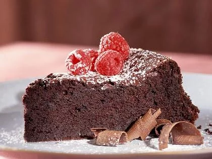
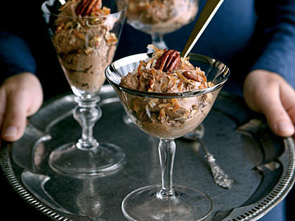

| Dark Chocolate Soufflé Cake |
|---|
| Ingredients |
| 1/2 cup granulated sugar |
| 1/2 cup packed dark brown sugar |
| 1 tablespoon instant espresso or 2 Tablespoons instant coffee granules |
| 2/3 cup Dutch process or unsweetened cocoa |
| 1/4 teaspoon salt |
| 2 ounces semisweet chocolate, chopped |
| 2 ounces unsweetened chocolate, chopped |
| 2 tablespoons Kahlúa (coffee-flavored liqueur) |
| 3 large egg yolks |
| 1/3 cup sifted cake flour (such as Swan's Down) |
| 6 large egg whites (at room temperature) |
| 1/4 teaspoon cream of tartar |
| 1/3 cup granulated sugar |
| 1 tablespoon powdered sugar |
| 1/4 cup raspberries (optional) |
| Chocolate curls (optional) |
| Instructions |
|---|
| 1. Preheat oven to 300°. |
| 2. Coat bottom of a 9-inch springform pan with cooking spray. Set aside. |
| 3. Combine 1/2 cup granulated sugar, 1/2 cup brown sugar, water,
and espresso in a large saucepan; stir well and bring to a boil. Remove from heat; add cocoa, salt, and chocolates, stirring with a whisk until chocolate melts. Stir in Kahlúa and egg yolks. Stir in flour; cool to room temperature. Set aside. |
| 4. Beat egg whites and cream of tartar at high speed of a mixer until foamy.
Add 1/3 cup granulated sugar, 1 tablespoon at a time, beating until stiff peaks form. Gently fold one-fourth of egg white mixture into chocolate mixture; repeat procedure with remaining egg white mixture, one-fourth at a time. Spoon into prepared pan. Bake at 300° for 1 hour or until a wooden pick inserted in center comes out almost clean. Cool completely on wire rack. Remove sides from pan; sift powdered sugar over cake. Garnish with raspberries and chocolate curls, if desired. |
| 5. Enjoy! |
|  |
| German Chocolate Mousse |
|---|
| Ingredients |
| 1 1/3 cups 1% low-fat milk |
| 2 teaspoons unflavored gelatin |
| 1 teaspoon vanilla extract |
| 8 ounces dark chocolate chips |
| 4 cups frozen light whipped topping, thawed |
| 1/4 cup flaked sweetened coconut, toasted |
| 1/4 cup chopped pecans, toasted |
| Instructions |
|---|
| 1. Combine first 3 ingredients in a heavy saucepan; let stand 2 minutes.
Cook over medium-high heat to 180° or until tiny bubbles form around edge (do not boil). Remove from heat, and add chocolate; cover and let stand 5 minutes. Stir until chocolate melts. |
| 2. Pour chocolate mixture into a medium bowl; cover and chill 30 minutes
or until set. Gently fold in whipped topping. Spoon about 2/3 cup mousse into each of 8 dessert bowls. Cover at least 2 hours or until set. Top each serving with 1 1/2 teaspoons coconut and 1 1/2 teaspoons pecans. |
| 3. Enjoy! |
|  |